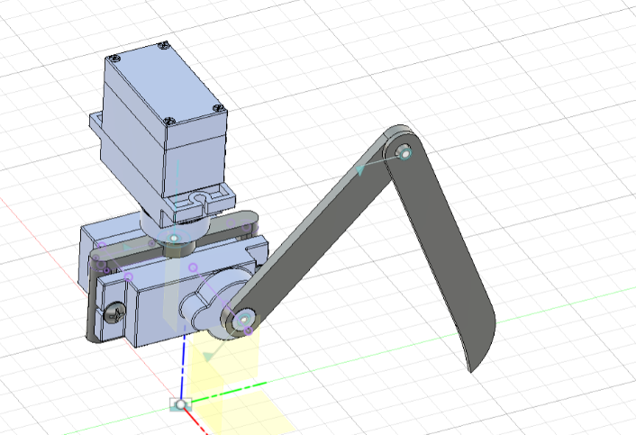
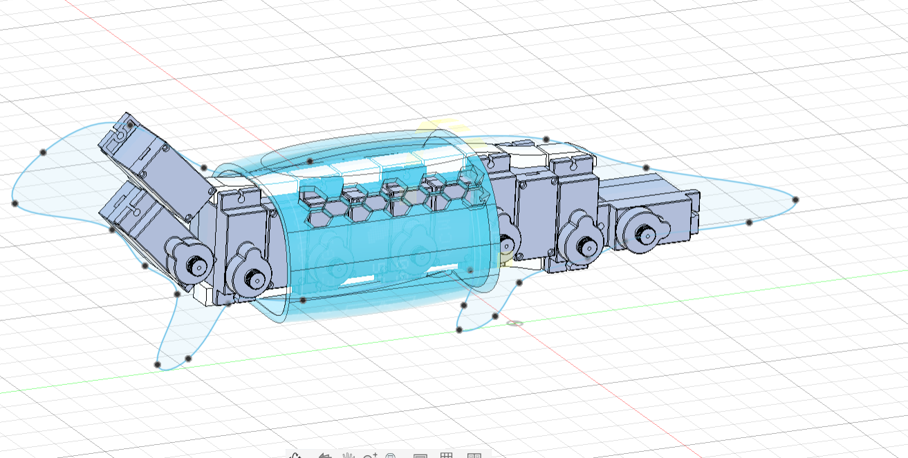
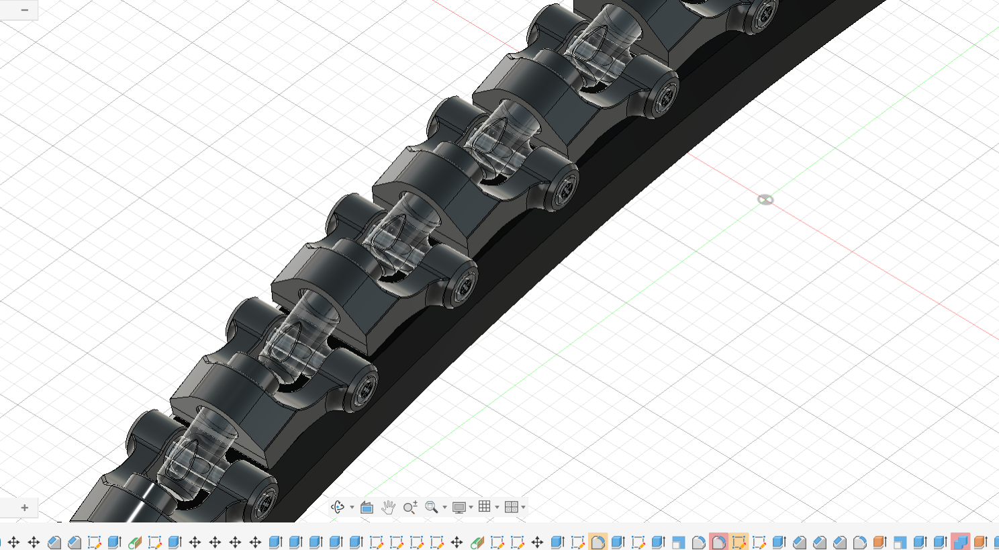
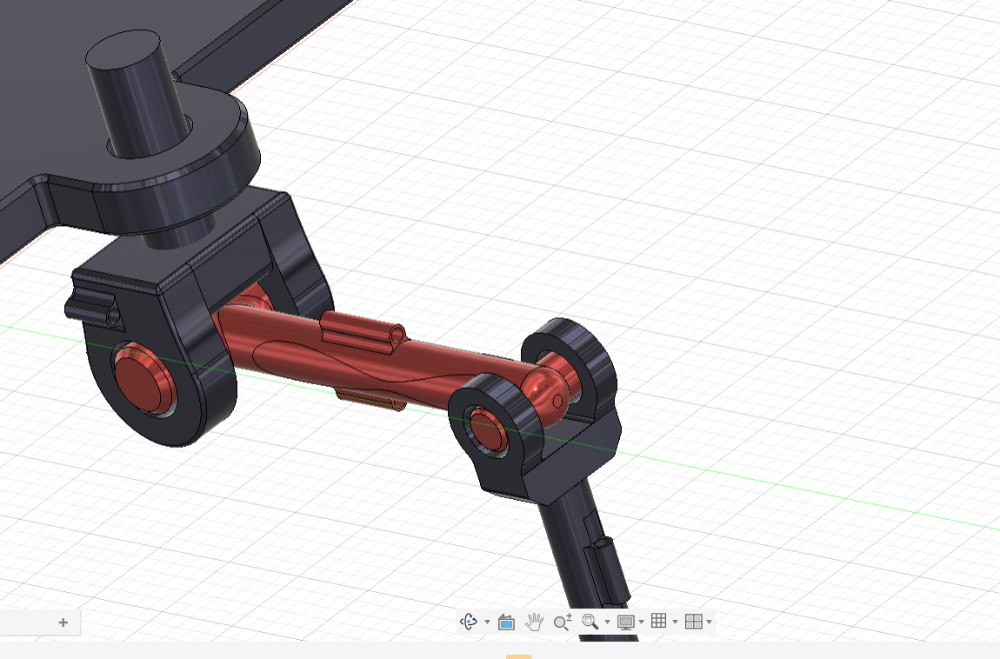
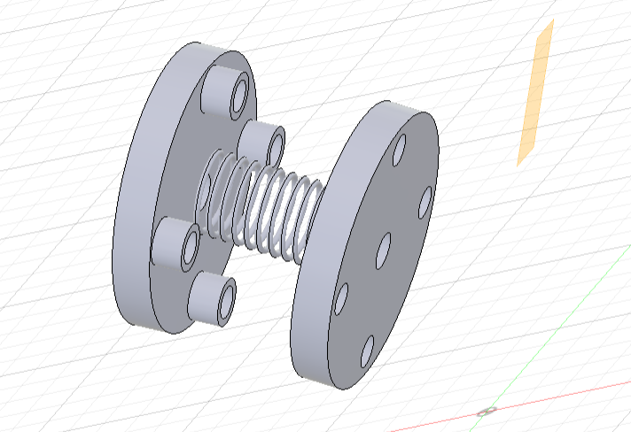
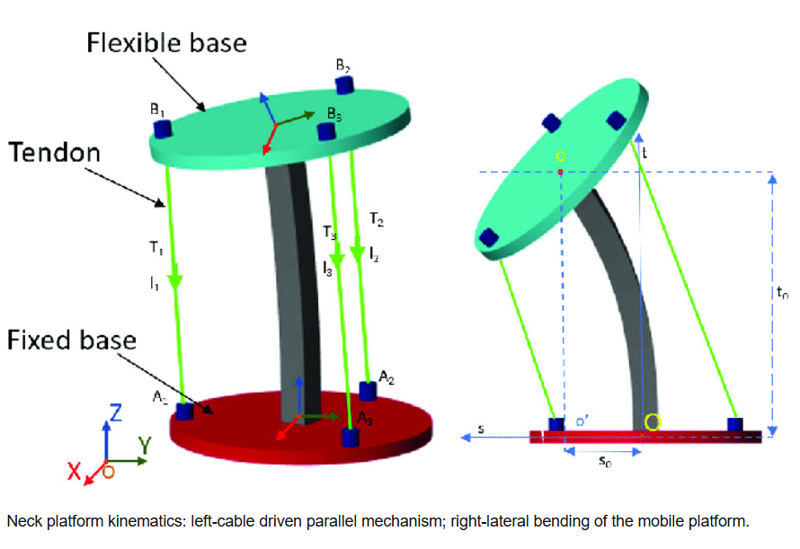
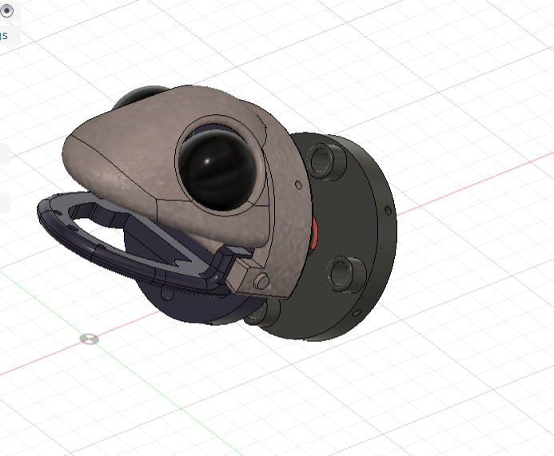
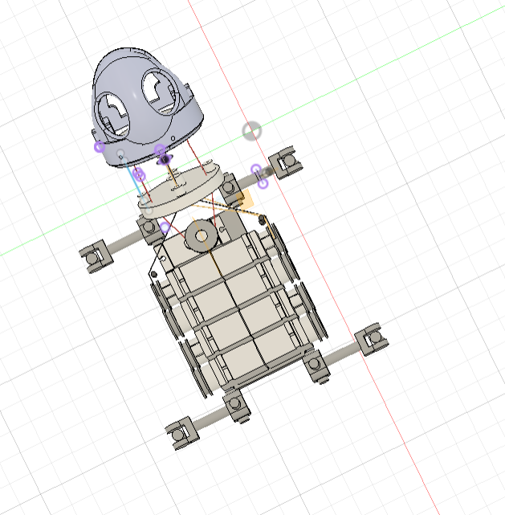

PROJECT LOG // BIOMIMETIC ROBOT
First attempt at understanding mechanical linkage systems in Fusion 360. Modeled a basic servo-driven two-bar linkage to study joint range of motion and force transmission before committing to a full finger design.

Roughed out the overall body proportion and motor placement. This stage focused on fitting multiple actuators into a compact torso while keeping the center of mass low. The hexagonal internal structure hints at a lightweight lattice approach.

Dedicated sessions to building core Fusion 360 skills — practicing revolute joints, pin constraints, and parametric modeling. The spine-like chain of joints (left) and the tendon-actuated ankle joint (right) were both exercises in achieving clean, repeatable geometry.


Designed the neck module with multi-axis rotation in mind. The flange-and-screw coupling allows the head to pan and tilt while keeping the connection rigid enough to support the head assembly. Two iterations shown side by side.


First full head model drawing from gecko facial geometry — wide-set eyes, a prominent brow ridge, and an articulated jaw mechanism. The organic surface sits over a rigid mechanical frame, balancing expressiveness with structural integrity.

First complete assembly bringing together the head, torso, and limb stubs. The grid-panel torso houses the main actuators, with arms extending horizontally via axle mounts. This is the first time the robot read as a coherent whole rather than isolated parts.
